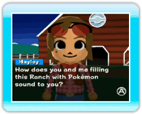
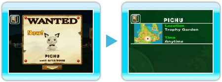
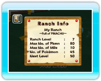

|
15
|
BBS
|
 |
|
Pokémon Wanted
Pokémon Wanted is a request from Hayley regarding which Pokémon she wants you to bring to the Ranch. This occurs when you deposit Pokémon from Pokémon Diamond or Pokémon Pearl to the Ranch. A Pokémon Wanted request has a time limit, and it will be removed after a certain period. Pokémon in Pokémon Wanted are mostly Pokémon that you haven't caught in Pokémon Diamond or Pokémon Pearl (based on Pokédex information). When you complete the Pokémon Wanted by catching the requested Wanted Pokémon and bringing it to the Ranch, a new Pokémon Wanted will begin. By completing the Pokémon Wanted request, you can move closer to completing your Pokédex. Use this feature to complete the National Pokédex! On the Pokémon Wanted screen when you point at a
Pokémon and press  In addition, once you complete the Pokémon Wanted,
point at the arrow on the bottom of the screen and press When you deposit a Wanted Pokémon to the Ranch, Hayley will often ask you to trade a Pokémon with her. The Pokémon you trade with Hayley will appear as Hayley's Pokémon on the Ranch. In addition, the Pokémon you get from Hayley by trading can be withdrawn; however, the Pokémon you gave to Hayley will not be withdrawable to your Pokémon Diamond or Pokémon Pearl Game Card. Ranch Info
You can check your Ranch's level, the number of Pokémon you have, or the maximum number of Miis you can bring to your Ranch. |
 , you can check how to catch the Wanted Pokémon or
what conditions are needed to catch it. If Hayley requested several
Pokémon at once, point at the green arrow and press
, you can check how to catch the Wanted Pokémon or
what conditions are needed to catch it. If Hayley requested several
Pokémon at once, point at the green arrow and press  |
 |
 |